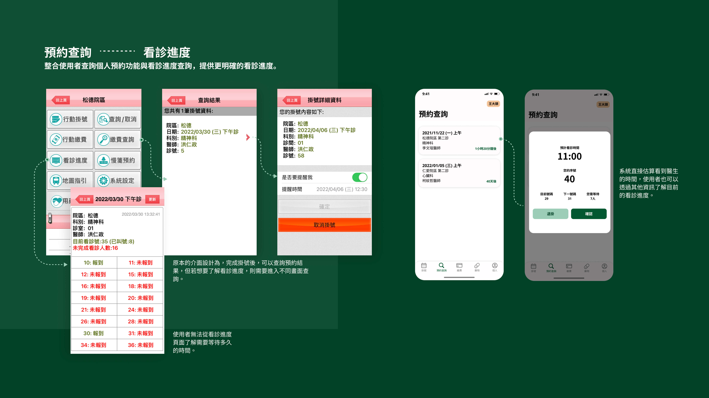
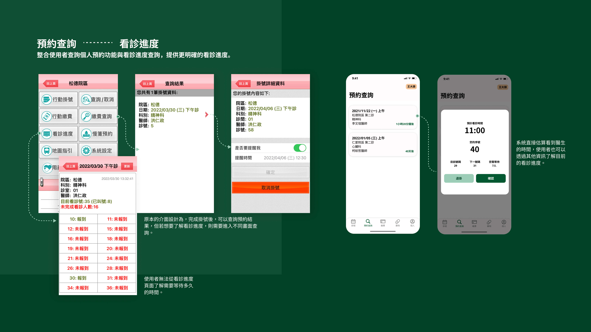

Situation
現行醫療院所的掛號服務已不僅限電話及網站預約，行動裝置上開發的掛號預約App，也增加流程即時性及看診的便利性。我想要從自己服務的台北市立聯合醫院行動掛號App著手，進行分析及改善。
Task
透過資訊架構的重新規劃，重新安排介面設計，使App操作起來更加直覺，免去重複性的動作，針對使用者個人看診經驗做整合，也提升使用者使用App及實際看診的體驗。
My Role
這是自己的Side Project，主要使用軟體為Figma。從分析原本的App到思考改善App的操作流程，最後到做Wireframe還有Prototype，過程中不斷摸索，找資料，斷續完成也歷時將近半年的時間。
Action
使用者研究
方法
針對近一年(2021.3.14~2022.3.14)，Apple Store及Play Store上對於「台北市立聯合醫院行動掛號」App共計47則評分及留言進行整理歸納，並以實際操作App了解使用困境。
分析結果
1. 整體評分低，負面評價多於正面評價
Apple Store共8則留言平均評分為2分，Play Store共39則留言平均評分為2.9分。
正面評價佔所有留言約 30%(14則)，大多數留言皆以簡單字句如「很好用」、「很棒」評論，僅有一則留言有明確的提出「掛號和取消掛號很實用」。
負面的評價佔全部留言70%(33則)，系統問題相關留言(系統閃退、網路不穩、功能無法使用)佔65%(21則)，介面設計及流程操作相關問題佔35%(11則)。
2. 介面設計及流程操作相關問題
■掛號系統資訊沒有整合
使用者提出「沒有士林門診部的資訊」、「沒有皮膚科掛號很奇怪」，實際操作發現整個掛號系統未將資訊整合，只能針對聯合醫院七大院區進行掛號，未結合社區門診部，且App使用一開始即要選擇院區，若只是要查詢聯醫體系下某一科別有哪些醫生，則需要重複點擊不同院。系統也無法查詢一位醫師所有的看診時間。
■人員資料重複輸入
使用者提出「每次掛號和查詢都還要輸入身分證字號和出生年月日，不能自動帶入」的情形，實際操作發現App開啟後未有登入之選項，包括掛號、繳費、查詢預約紀錄、用要查詢等功能時，需要重複輸入個人資料，缺乏針對使用者個人的醫療紀錄進行整合。另外使用者也提出「設定家人名單，結果掛號不能用，查詢也不能用」，雖「系統設定中」可以選擇編輯家人名單，但執行掛號等其他活動時，卻無法帶入所設定的內容。
■無法得知明確的看診進度
多則留言特別針對看診進度部分提出建議，推測可能是現代生活講求效率，且醫院看診經驗需耗費大量時間等待，使使用者期待App的協助能夠減少等待的時間。使用者提出希望可以增加「下一位看診號」、「已看診號碼」的提示；實際操作App發現看診進度查詢頁面無法提供明確看診資訊，無從得知已經看診多少人，仍需要等待多久。
確立User flow
確立樣式
Color
Icon
Typography
Wireframe
Result
 
